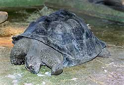

In de natuur eten Seychellen-Reuzenschildpadden hoofdzakelijk vegetarisch. Zo eten ze o.a. grassoorten, zeggesoorten, allerlei bladeren, kruiden, bloemen en vruchten. Door de intensieve begrazing is er op veel plaatsen een speciale begroeiing ontstaan. Dit wordt in het engels "tortoise-turf" genoemd. Dit is een soort veld vol grassen met allerlei kruiden en dergelijke ertussen die niet de kans krijgen erg hoog te worden. Er wordt voornamelijk van de jonge blaadjes gegeten; door het grazen van de schildpadden verjongen de planten zich voortdurend. Het grote voordeel is dat jonge blaadjes mals en klein zijn en tevens een hoge voedingswaarde hebben. Met deze plantaardige kost gaan er ongetwijfeld ook wel wat insecten en dergelijke mee naar binnen. Ook wordt er wel aas en zo nu en dan geitenmest gegeten. Dit beslaat echter slechts 0,5% van het gehele menu.
De Seychellenreuzenschildpadden die verzorgd worden bij Reptielenzoo
Iguana worden dagelijks gevoerd. Dit gaat op de volgende manier:
- Zondags krijgen de schildpadden andijvie met muesli en komkommer.
- Dinsdags krijgen ze andijvie en groenten en fruit van het seizoen.
- Donderdags krijgen ze andijvie met kattenbrokjes. Laatstgenoemde zijn geweekt
in water en licht-vochtig (dus zacht).
- Op de andere vier dagen krijgen ze gevarieerd voedsel. Dit is afhankelijk
van wat er op dat moment beschikbaar is. Dit kunnen allerlei soorten groenten
en/of fruit zijn, aardappelen of brood. Ook zijn er dagen dat ze verse, onbespoten
klaver en/of gras krijgen. In de wintermaanden krijgen ze veel witlof.
Op elke maaltijd wordt altijd een flinke hoeveelheid kalk-, vitamine- en mineralen-preparaat
gestrooid.
